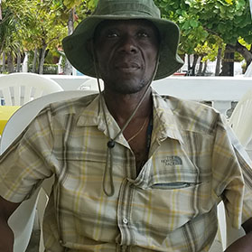

"As an electromechanical engineer in Haiti, I believe in harnessing our innovation and resilience to power not just homes but hopes. Each project I undertake is not just about electricity; it is about creating a brighter future for my community and advancing our country's potential."

I was born in 1967 in the vibrant coastal town of Cabaret, Haiti. Nestled in the Arcahaie Arrondissement of the Ouest department, Cabaret is a picturesque commune known for its rich culture and stunning landscapes.
As a devoted music lover, my heart swells with joy whenever I attend a concert by my favorite band, Tropicana, eagerly making it a point to attend every gala they host during their tours in Haiti.